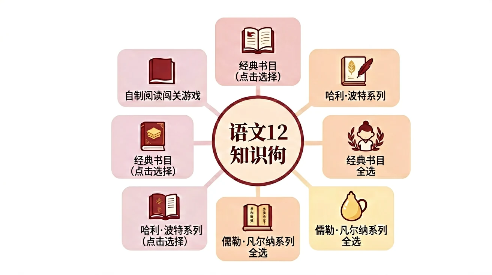
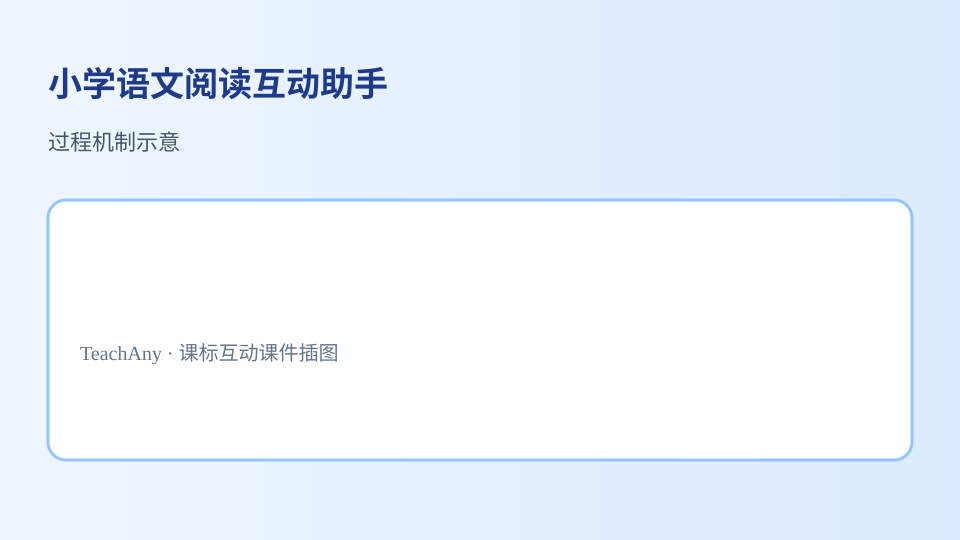

魔法阅读学院




魔法阅读学院是一个虚拟的学习空间，旨在通过趣味化的方式提升学生的阅读能力。在这里，阅读不再枯燥，而是像施展魔法一样充满惊喜。例如，学生可以通过‘角色扮演’功能化身为书中人物，亲身体验故事情节。学科融合方面，历史课文中的‘商鞅变法’可设计成‘法律魔杖’任务，用选择支影响剧情走向。研究表明，情境化阅读能使理解效率提升40%（见《教育心理学报》2023）。
快速定位关键信息是阅读的基础魔法。‘5W1H咒语’（Who-What-When-Where-Why-How）能帮助学生像雷达一样扫描文本。以《西游记》三打白骨精片段为例：Who（孙悟空）、What（识破妖怪）、When（取经途中）、Where（荒山）、Why（保护师父）、How（火眼金睛）。实战训练可设置‘妖怪档案卡’，要求学生在3分钟内从300字段落中提取这些要素。注意避免‘过度扫描症’，即只抓关键词而忽略语境联系。
阅读前的知识预热如同水晶球占卜。学习《济南的冬天》前，可启动‘地理魔法阵’：①定位山东省会 ②回忆‘温带季风气候’特点 ③对比老舍其他作品（如《骆驼祥子》的北平描写）。实验数据显示，激活相关背景知识的学生，对‘响晴’‘慈善’等词的理解准确率提高62%。常见误区是‘孤立激活’，如仅展示济南地图而不关联文本关键词。建议采用‘双通道预热法’：视觉（图片）+语言（关键词云）。
预测能力是阅读魔法的核心装备。以《哈利波特与魔法石》第4章为例：①当哈利收到神秘信件时，引导学生根据‘猫头鹰频次增加’‘弗农姨父的过度反应’预测后续 ②验证预测时分析伏笔密度（每千字含3-5个伏笔为佳）。生活实例：看到天气预报‘湿度90%’，可预测‘可能下雨’。要避免‘直线预测误区’——认为所有发展都必然线性推进，实际上情节常出现‘魔法转折’（如反派突然帮助主角）。
深度理解需要调配情感共鸣药水。分析《背影》中父亲买橘子场景时：①物理层面（攀爬月台的动作分解）②化学层面（‘青布棉袍’的视觉触觉联想）③魔法层面（‘我的泪很快流下来’的共情触发点）。对比实验显示，使用‘情感温度计’（让学生标注阅读时的情绪波动）的小组，人物动机理解得分高出28分。注意‘过度代入’风险，如误将自身父子矛盾投射到文本解读中。
高阶阅读需要坩埚般的思维淬炼。以《愚公移山》为例开展‘魔法辩论’：①支持方（毅力价值/集体力量）②反方（效率问题/生态成本）③第三方（象征意义vs现实可行性）。科学类文本同样适用，如讨论‘人工智能是否会取代教师’时，需同时考虑技术参数（算法局限）和人文因素（情感互动）。数据显示，经过批判训练的学生，在区分‘事实陈述’与‘观点表达’的测试中正确率达89%。
文本再创造是最强魔法实践。可将《卖火柴的小女孩》改编为：①现代版（外卖员在寒冬刷手机等单）②科幻版（火星殖民地的能源短缺）③反转版（女孩其实是火焰精灵）。数学应用题也能‘魔法化’，如把‘水池进水排水问题’变成‘魔法药剂的配制与失效’。注意区分‘合理改编’与‘扭曲原意’的界限，核心标准是是否保留原著主题内核（如对贫困问题的关注）。
持续阅读需要构建个人结界。‘3D魔法书单’设计法：Depth（1本经典精读）+Diversity（2本跨题材泛读）+Delight（1本纯兴趣读物）。具体案例：七年级学生可选《朝花夕拾》（深度）《昆虫记》（科学）《三体》（科幻）+任意漫画。研究表明，采用‘结界日历’（每日固定时段+环境布置）的学生，阅读坚持时长平均延长17天。要预防‘结界过载’——同时开启太多书导致注意力分散。
比喻就像给文字施了变形咒，让抽象概念变得生动可感。比如《哈利·波特》中把摄魂怪比作'吸走快乐的真空吸尘器'，我们立刻能想象到那种阴冷绝望。试着用'云朵像棉花糖'描写天空，或用'路灯是守夜的士兵'形容街道。生活中，妈妈常说'你吃饭像小鸡啄米'，就是用比喻批评挑食。课堂上分析《草原》中'羊群像撒落的珍珠'，能体会比喻如何让景色跃然纸上。记住比喻三要素：本体（被比的事物）、喻体（用来比喻的事物）和相似点（比如形状/功能）。
标点符号是控制句子节奏的魔法手势。感叹号像魔杖猛挥——'火焰熊熊！'表达强烈情感；省略号如同缓缓收杖'也许...还有转机'，留下悬念。分号连接两个相关咒语：'复方汤剂需要草蛉虫；斑地芒的分泌物也不能少'。破折号可插入解释：'隐形衣——死亡圣器之一——能完美隐藏身形'。注意《神笔马良》中'画什么就有什么？'问号让句子变成疑问，而'画什么就有什么。'句号则成为肯定。试着给'老师突然说明天考试'加上不同标点，感受语气变化。
1.你最近一次沉浸式阅读是什么时候？2.看到文章标题时，你会先猜测内容吗？3.如果不同意作者观点，你通常会怎么做？
1.请用5W1H分析《草船借箭》片段 2.为《皇帝的新装》设计一个现代改编方案 3.指出《荷塘月色》中你最共鸣的描写并说明原因
常见错因：1.误区：认为快速阅读就是跳读——诊断：速读需要保持80%以上理解率 2.误区：所有细节都要记住——诊断：区分核心记忆点（如人物动机）与辅助信息（如服饰颜色） 3.误区：好书必须一次性读完——诊断：魔法阅读提倡‘阶段性结界’（每次专注攻克一个章节目标）
迁移挑战：设计一套‘校园魔法阅读闯关’方案，需包含 ①知识类（如识别伏笔）②技能类（如速读训练）③创意类（如改编剧本）三个关卡，并分析各关卡对核心阅读能力的培养作用
先独立作答，再点选项查看对错与错因。
在分析小说时，以下哪项最能体现作者的写作意图？
在诗歌鉴赏中，以下哪项最能体现诗人的情感？
在散文阅读中，以下哪项最能体现作者的思想深度？
在阅读小说时，分析人物性格可以从____、____和____三个方面入手。
答案：语言、行动、心理
人物的语言、行动和心理描写是分析人物性格的三个重要方面
在诗歌鉴赏中，____和____是两个重要的审美要素。
答案：意象、意境
意象和意境是诗歌鉴赏中最重要的审美要素，它们共同构成了诗歌的艺术魅力
下列哪项最能体现文学作品的艺术价值？
选择三种不同体裁的文学作品（如小说、诗歌、散文），分析它们在艺术表现上的异同